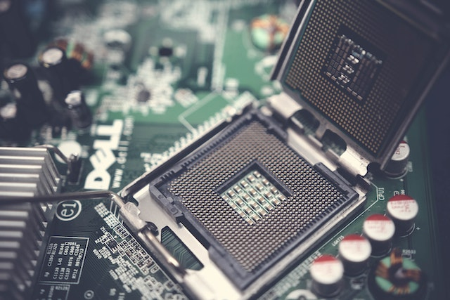

Assembling a desktop PC can be an exciting and rewarding experience. Here's a step-by-step guide to help you assemble your own desktop PC:
- Gather the components: You'll need a computer case, motherboard, CPU, RAM, storage drives, power supply, graphics card (if applicable), and necessary cables.
- Prepare the case: Open the computer case and ensure all the necessary standoffs are in place for the motherboard. Install the power supply in the designated area.
- Install the motherboard: Carefully place the motherboard into the case, aligning the I/O shield with the rear panel. Secure the motherboard with screws.
- Install the CPU: Open the CPU socket on the motherboard, align the notches on the CPU with the socket, and gently place it in. Close the socket lever to secure the CPU.
- Install RAM: Insert the RAM modules into the memory slots on the motherboard, aligning the notches, and apply gentle pressure until they snap into place.
- Connect storage drives: Install the hard drives or solid-state drives into the drive bays and connect the SATA cables from the drives to the motherboard.
- Connect cables: Connect the power supply cables to the motherboard, CPU, RAM, and storage drives. Connect the front panel connectors, USB headers, and audio cables.
- Install the graphics card: If you have a dedicated graphics card, align it with the PCIe slot on the motherboard and secure it with a screw. Connect the power cables from the power supply.
- Double-check connections: Ensure all cables and components are securely connected.
- Close the case: Put the side panel back on the case and secure it with screws.
Once everything is assembled, you can connect peripherals like a monitor, keyboard, and mouse, and power on your desktop PC. Remember to install the operating system and necessary drivers to complete the setup process.
